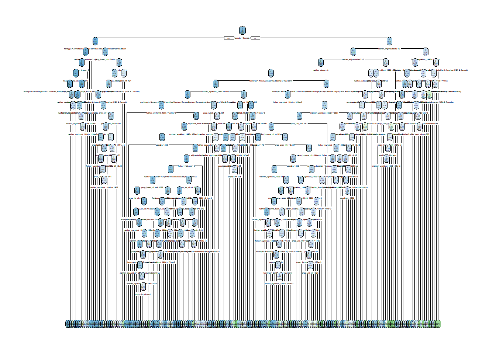
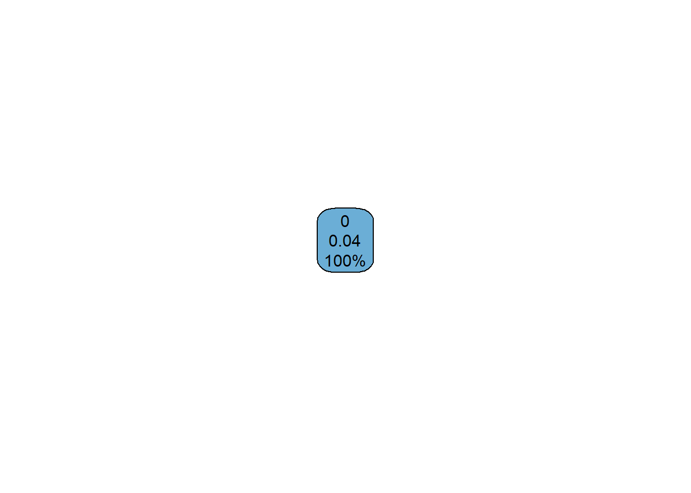

library(tidyverse) # datahåndtering, grafikk og glimpse()
library(rsample) # for å dele data i training og testing
library(rpart) # funksjoner for CART
library(rpart.plot) # funksjon for å plotte CART
library(caret) # inneholder funksjon for confusion matrix4 Klassifikasjonstrær
I dette kapittelt skal vi bruke følgende pakker:
Vi skal her bruke syntetiske data som simulerer en fødselskohort. Datasettet inneholder informasjon om individer og utfallsvariabelen felonies angir om personen har begått en alvorlig forbrytelse (1) eller ikke (0). Vi starter med å lage en logistisk regresjonsmodell som sammenligningsgrunnlag, og deretter bygger vi klassifikasjonstrær.
4.1 Lese inn data
load("data/synthetic_birthCohort96.RData")
glimpse(synthetic_birthCohort)Rows: 30,000
Columns: 24
$ worldpart <fct> Nordic Countries, Western Europe, Norway, Western…
$ violence <dbl> 0, 0, 0, 0, 0, 0, 0, 0, 0, 0, 0, 0, 0, 0, 0, 0, 0…
$ drugs <dbl> 0, 0, 0, 0, 0, 0, 0, 0, 0, 0, 0, 0, 0, 0, 0, 0, 0…
$ felonies <dbl> 0, 0, 0, 0, 0, 0, 0, 0, 0, 0, 0, 0, 0, 0, 0, 0, 0…
$ father_wyrkinnt_1996 <int> 197687, 361911, 30616, 187039, 255638, 225545, 26…
$ mother_wyrkinnt_1996 <int> 0, 195472, 208483, 163829, 232438, 200801, 281004…
$ mother_shjmndutbet3 <int> 0, 0, 0, 0, 0, 0, 0, 0, 0, 0, 0, 0, 0, 0, 0, 0, 0…
$ father_shjmndutbet3 <int> 0, 0, 0, 0, 0, 0, 0, 0, 0, 0, NA, 0, 0, 34, 0, 0,…
$ father_violence <dbl> 0, 0, 0, 0, 0, 0, 0, 0, 0, 0, NA, 0, 0, 0, 0, 0, …
$ father_drugs <dbl> 0, 0, 0, 0, 0, 0, 0, 0, 0, 0, 0, 0, 0, 0, 0, 0, 0…
$ mother_violence <dbl> 0, 0, 0, 0, 0, 0, 0, 0, 0, 0, 0, 0, 0, 0, 0, 0, 0…
$ mother_drugs <dbl> 0, 0, 0, 0, 0, 0, 0, 0, 0, 0, 0, 0, 0, 0, 0, 0, 0…
$ prop_sa_nh <dbl> 0.024305556, 0.023255814, 0.021067416, 0.04482758…
$ mean_income_nh <dbl> 160172.08, 187193.18, 157009.95, 214382.80, 14423…
$ prop_uni_nh <dbl> 0.2213115, 0.2760417, 0.1694725, 0.5272374, 0.260…
$ prop_hs_nh <dbl> 0.4590164, 0.4536424, 0.4915825, 0.3268482, 0.379…
$ prop_ivest_nh <dbl> 0.000000000, 0.009933775, 0.077441077, 0.03696498…
$ prop_crim_nh <dbl> 0.000000000, 0.006756757, 0.005611672, 0.00194552…
$ sum_crim_nh <dbl> 0, 2, 5, 1, 3, 1, 0, 1, 1, 1, 20, 14, 9, 17, 3, 0…
$ popsize <dbl> 346, 298, 891, 514, 856, 375, 440, 527, 308, 628,…
$ famtype <fct> Ektepar med barn, Ektepar med barn, Annet, Mor me…
$ gender <fct> Male, Male, Male, Female, Female, Male, Male, Mal…
$ father_education <fct> Vg skolenivaa, Vg skolenivaa, Vg skolenivaa, Vg s…
$ mother_education <fct> Vg skolenivaa, Vg skolenivaa, Vg skolenivaa, Vg s…Vi gjør litt enkel datahåndtering: fjerner noen variable og gjør utfallsvariabelen om til en factor.
synth <- synthetic_birthCohort %>%
select(-drugs, -violence) %>%
mutate(felonies = factor(felonies))
table(synth$felonies)
0 1
28772 1228 Vi splitter datasettet i training og testing:
set.seed(426)
synth_split <- initial_split(synth, prop = .7)
training <- training(synth_split)
testing <- testing(synth_split)4.2 Logistisk regresjon som baseline
Før vi lager klassifikasjonstrær er det nyttig å ha et sammenligningsgrunnlag. Vi bruker logistisk regresjon med alle variable:
est.glm <- glm(felonies ~ ., data = training, family = "binomial")Warning: glm.fit: fitted probabilities numerically 0 or 1 occurredsummary(est.glm)
Call:
glm(formula = felonies ~ ., family = "binomial", data = training)
Coefficients:
Estimate Std. Error z value Pr(>|z|)
(Intercept) -4.445e+00 6.277e-01 -7.082 1.42e-12
worldpartNordic Countries -6.187e-03 1.310e-01 -0.047 0.962329
worldpartWestern Europe 8.339e-02 1.299e-01 0.642 0.520847
worldpartEastern Europe 2.194e+00 5.554e-01 3.951 7.79e-05
worldpartAfrica 1.674e-01 1.671e-01 1.002 0.316345
worldpartAsia -4.059e-01 1.506e-01 -2.696 0.007010
worldpartOceania & Japan 4.068e-02 7.497e-01 0.054 0.956724
worldpartLatin America 3.748e-01 2.725e-01 1.376 0.168957
worldpartNorth America (USA & Canada) -1.589e-01 2.552e-01 -0.623 0.533522
father_wyrkinnt_1996 -7.559e-07 2.797e-07 -2.703 0.006878
mother_wyrkinnt_1996 -1.624e-06 4.354e-07 -3.730 0.000191
mother_shjmndutbet3 1.959e-02 7.790e-03 2.514 0.011924
father_shjmndutbet3 9.582e-03 5.957e-03 1.609 0.107690
father_violence 6.477e-01 2.111e-01 3.067 0.002159
father_drugs 5.681e-01 2.075e-01 2.737 0.006193
mother_violence 5.298e-01 6.532e-01 0.811 0.417271
mother_drugs 7.543e-01 3.689e-01 2.045 0.040860
prop_sa_nh 2.578e+00 1.400e+00 1.841 0.065643
mean_income_nh -1.478e-07 2.024e-06 -0.073 0.941756
prop_uni_nh 2.315e-01 5.934e-01 0.390 0.696422
prop_hs_nh 4.141e-01 9.769e-01 0.424 0.671628
prop_ivest_nh -1.012e-01 6.817e-01 -0.149 0.881947
prop_crim_nh -1.718e+01 9.439e+00 -1.820 0.068737
sum_crim_nh 1.555e-02 1.318e-02 1.180 0.237882
popsize 2.841e-05 1.369e-04 0.208 0.835595
famtypeEktepar med barn 3.518e-01 2.203e-01 1.597 0.110339
famtypeFar med barn 5.980e-01 2.861e-01 2.090 0.036588
famtypeMor med barn 9.258e-01 2.223e-01 4.164 3.12e-05
famtypeSamboerpar med barn 8.312e-01 2.361e-01 3.520 0.000431
genderMale 1.342e+00 8.865e-02 15.138 < 2e-16
father_educationUkjent -1.307e-01 1.837e-01 -0.712 0.476686
father_educationUniversitetsnivaa -1.595e-01 1.119e-01 -1.425 0.154134
father_educationVg skolenivaa -1.135e-01 9.615e-02 -1.180 0.237914
mother_educationUkjent 6.996e-02 1.716e-01 0.408 0.683446
mother_educationUniversitetsnivaa -1.375e-01 1.138e-01 -1.208 0.227166
mother_educationVg skolenivaa -4.305e-02 9.880e-02 -0.436 0.663062
(Intercept) ***
worldpartNordic Countries
worldpartWestern Europe
worldpartEastern Europe ***
worldpartAfrica
worldpartAsia **
worldpartOceania & Japan
worldpartLatin America
worldpartNorth America (USA & Canada)
father_wyrkinnt_1996 **
mother_wyrkinnt_1996 ***
mother_shjmndutbet3 *
father_shjmndutbet3
father_violence **
father_drugs **
mother_violence
mother_drugs *
prop_sa_nh .
mean_income_nh
prop_uni_nh
prop_hs_nh
prop_ivest_nh
prop_crim_nh .
sum_crim_nh
popsize
famtypeEktepar med barn
famtypeFar med barn *
famtypeMor med barn ***
famtypeSamboerpar med barn ***
genderMale ***
father_educationUkjent
father_educationUniversitetsnivaa
father_educationVg skolenivaa
mother_educationUkjent
mother_educationUniversitetsnivaa
mother_educationVg skolenivaa
---
Signif. codes: 0 '***' 0.001 '**' 0.01 '*' 0.05 '.' 0.1 ' ' 1
(Dispersion parameter for binomial family taken to be 1)
Null deviance: 6828.6 on 20267 degrees of freedom
Residual deviance: 6279.3 on 20232 degrees of freedom
(732 observations deleted due to missingness)
AIC: 6351.3
Number of Fisher Scoring iterations: 8Vi predikerer på testing-data og gjør en klassifisering med cut-off på 0.5:
testing_glm <- testing %>%
mutate(prob_glm = predict(est.glm, newdata = testing, type = "response")) %>%
mutate(klassifiser = factor(ifelse(prob_glm < .5, 0, 1))) %>%
drop_na()
confusionMatrix(reference = testing_glm$felonies,
testing_glm$klassifiser,
positive = "1")Confusion Matrix and Statistics
Reference
Prediction 0 1
0 8320 353
1 2 2
Accuracy : 0.9591
95% CI : (0.9547, 0.9632)
No Information Rate : 0.9591
P-Value [Acc > NIR] : 0.5141
Kappa : 0.0102
Mcnemar's Test P-Value : <2e-16
Sensitivity : 0.0056338
Specificity : 0.9997597
Pos Pred Value : 0.5000000
Neg Pred Value : 0.9592990
Prevalence : 0.0409128
Detection Rate : 0.0002305
Detection Prevalence : 0.0004610
Balanced Accuracy : 0.5026967
'Positive' Class : 1
Denne confusion matrix gir oss et referansepunkt for å vurdere klassifikasjonstrærne.
4.3 Klassifikasjonstre
Utfallsvariabel og prediktorer spesifiseres som en formel på samme måte som for regresjon. Siden vi her har en klassifikasjon må vi spesifisere method = "class". Hvis ikke vil rpart() gjette hva slags modell (som kanskje er riktig), så du kan få andre resultater enn du forventet.
klass_tre <- rpart(felonies ~ .,
data = training, method = "class")Resultatet kan fremstilles grafisk med funksjonen rpart.plot() slik:
rpart.plot(klass_tre)
Vi kan også få printet ut resultatet som regler i en tabell med rpart.rules():
rpart.rules(klass_tre, extra = 4) felonies 0 1
0 [.96 .04] null modelDa kan vi sammenligne prediksjoner med observert utfall for testingdataene. I predict() må det angis type = "class" for å spesifisere at det skal være klassifikasjon.
testing_pred <- testing %>%
mutate(felonies_pred = predict(klass_tre, newdata = testing, type = "class"))
tab <- testing_pred %>%
select(felonies_pred, felonies) %>%
table()
confusionMatrix(tab, positive = "1")Confusion Matrix and Statistics
felonies
felonies_pred 0 1
0 8628 372
1 0 0
Accuracy : 0.9587
95% CI : (0.9543, 0.9627)
No Information Rate : 0.9587
P-Value [Acc > NIR] : 0.5138
Kappa : 0
Mcnemar's Test P-Value : <2e-16
Sensitivity : 0.00000
Specificity : 1.00000
Pos Pred Value : NaN
Neg Pred Value : 0.95867
Prevalence : 0.04133
Detection Rate : 0.00000
Detection Prevalence : 0.00000
Balanced Accuracy : 0.50000
'Positive' Class : 1
4.4 Tuning/pruning
Vi har vært inne på tidligere at vi kan styre hvordan algoritmen fungerer. Det er noen parametres om styrer prosessen, og disse kan vi justere. Her tar vi for oss de viktigste.
Kort fortalt styrer disse parametrene hvor komplekse trærne kan bli. Husk nå fra tidligere kapittel: mer kompleks modell gir bedre tilpassning til trainingdata - men kan gi dårligere tilpassning til testingdata. Målet er altså å finne en slags balansert kompleksitet.
Nå er arbeidsflyten slik at man skrur litt på disse parametrene, sjekker resultatet og justerer på nytt og sjekker… osv. Da er det viktig at bruker trainingdata! Ikke bruke testingdata før du er rimelig fornøyd med resultatet.
4.4.1 Bruk av cp = ...
cp er complexity parameter som setter et krav på hvor mye hver split skal bidra til modellens tilpassning til data. Forvalget er 0.01. Med en lavere verdi tillates mer komplekse trær:
klass_tre2 <- rpart(felonies ~ .,
data = training, method = "class",
cp = 0.0000001, maxdepth = 20, minbucket = 3)
rpart.plot(klass_tre2)
4.4.2 Bruk av maxdepth = ...
Parameteren maxdepth setter en grense for hvor mange splitter det kan gjøres i hver forgrening:
klass_tre3 <- rpart(felonies ~ .,
data = training, method = "class",
maxdepth = 4)
rpart.plot(klass_tre3)
4.4.3 Bruk av minbucket = ...
Parameterne minbucket = ... styrer hvor mange observasjoner det minst må være i den siste noden. Forvalget er en 1/3 av minsplit, altså 7 hvis man ikke har endret på minsplit.
klass_tre4 <- rpart(felonies ~ .,
data = training, method = "class",
minbucket = 15)
rpart.plot(klass_tre4)
4.4.4 Sette delene sammen
Du kan kombinere disse parametrene. Alle har forvalgte verdier, så du bruker dem uansett – forskjellen er bare om du har tatt et eksplisitt valg eller overlater det hele til softwaren.
Her er et eksempel der vi bruker et ganske komplekst tre med justerte parametre:
klass_tre5 <- rpart(felonies ~ .,
data = training, method = "class",
cp = 0, maxdepth = 25, minbucket = 5)
rpart.plot(klass_tre5)
rpart.rules(klass_tre5) felonies
0.00 when gender is Female & famtype is Annet or Ektepar med barn or Far med barn or Samboerpar med barn & mother_shjmndutbet3 < 20 & mother_wyrkinnt_1996 < 167741 & mean_income_nh >= 150050 & prop_hs_nh >= 0.55 & father_drugs is 0
0.00 when gender is Female & famtype is Annet or Ektepar med barn or Far med barn or Samboerpar med barn & worldpart is Norway or Nordic Countries or Western Europe or Eastern Europe or Africa or Asia or Oceania & Japan or North America (USA & Canada) & mother_shjmndutbet3 < 20 & mean_income_nh is 149840 to 150050 & father_drugs is 0 & father_education is Ukjent or Vg skolenivaa
0.00 when gender is Female & famtype is Annet or Ektepar med barn or Far med barn or Samboerpar med barn & worldpart is Norway or Nordic Countries or Western Europe or Eastern Europe or Africa or Asia or Oceania & Japan or North America (USA & Canada) & mother_shjmndutbet3 < 20 & mother_wyrkinnt_1996 >= 160259 & mean_income_nh is 149840 to 150050 & father_drugs is 0 & father_education is Grunnskole or Universitetsnivaa
0.00 when gender is Female & famtype is Mor med barn & worldpart is Asia or Oceania & Japan or North America (USA & Canada) & popsize >= 49 & prop_hs_nh < 0.51 & prop_ivest_nh >= 0.0680 & father_drugs is 0
0.00 when gender is Female & famtype is Mor med barn & worldpart is Norway or Nordic Countries or Western Europe or Eastern Europe or Africa or Latin America & popsize >= 49 & prop_uni_nh >= 0.31 & prop_hs_nh < 0.51 & prop_crim_nh >= 0.0131 & prop_ivest_nh >= 0.0803 & father_drugs is 0 & sum_crim_nh >= 9
0.00 when gender is Female & famtype is Mor med barn & father_wyrkinnt_1996 < 186764 & worldpart is Norway or Nordic Countries or Western Europe or Eastern Europe or Africa or Latin America & mother_wyrkinnt_1996 >= 1938 & popsize >= 49 & prop_uni_nh < 0.14 & prop_hs_nh < 0.51 & prop_crim_nh >= 0.0131 & prop_ivest_nh >= 0.0803 & father_drugs is 0 & sum_crim_nh >= 9
0.00 when gender is Female & famtype is Mor med barn & father_wyrkinnt_1996 >= 171080 & worldpart is Norway or Nordic Countries or Western Europe or Eastern Europe or Africa or Latin America & popsize >= 49 & prop_hs_nh < 0.33 & prop_crim_nh >= 0.0131 & prop_ivest_nh >= 0.0803 & father_drugs is 0 & sum_crim_nh < 9
0.00 when gender is Male & famtype is Annet or Ektepar med barn or Far med barn & father_shjmndutbet3 < 2 & father_wyrkinnt_1996 < 326867 & worldpart is Norway or Nordic Countries or Western Europe or Eastern Europe or Asia or North America (USA & Canada) & mother_shjmndutbet3 < 3 & mother_wyrkinnt_1996 is 1948 to 470153 & mother_drugs is 0 & popsize >= 203 & prop_hs_nh < 0.28 & prop_ivest_nh >= 0.0088 & mother_education is Ukjent or Universitetsnivaa or Vg skolenivaa & father_violence is 0
0.00 when gender is Male & famtype is Annet or Ektepar med barn & father_shjmndutbet3 < 2 & father_wyrkinnt_1996 < 326867 & worldpart is Nordic Countries or Western Europe or Asia or North America (USA & Canada) & mother_shjmndutbet3 < 3 & mother_wyrkinnt_1996 is 1948 to 470153 & mother_drugs is 0 & popsize >= 203 & prop_ivest_nh < 0.0081 & mother_education is Ukjent or Universitetsnivaa or Vg skolenivaa & father_violence is 0
0.00 when gender is Male & famtype is Annet or Ektepar med barn & father_shjmndutbet3 < 2 & father_wyrkinnt_1996 < 248802 & worldpart is Norway & mother_shjmndutbet3 < 3 & mother_wyrkinnt_1996 is 1948 to 470153 & mother_drugs is 0 & popsize is 203 to 558 & prop_ivest_nh < 0.0081 & mother_education is Ukjent or Universitetsnivaa or Vg skolenivaa & father_violence is 0
0.00 when gender is Male & famtype is Annet or Ektepar med barn & father_shjmndutbet3 < 2 & father_wyrkinnt_1996 is 248802 to 259317 & worldpart is Norway & mother_shjmndutbet3 < 3 & mother_wyrkinnt_1996 is 1948 to 170051 & mother_drugs is 0 & popsize is 203 to 558 & prop_ivest_nh < 0.0081 & mother_education is Ukjent or Universitetsnivaa or Vg skolenivaa & father_violence is 0
0.00 when gender is Male & famtype is Annet or Ektepar med barn & father_shjmndutbet3 < 2 & father_wyrkinnt_1996 < 326867 & worldpart is Norway or Nordic Countries or Western Europe or Eastern Europe or Asia or North America (USA & Canada) & mother_shjmndutbet3 < 3 & mother_wyrkinnt_1996 is 1948 to 470153 & mother_drugs is 0 & popsize >= 203 & mean_income_nh < 174282 & prop_hs_nh >= 0.44 & prop_ivest_nh is 0.0081 to 0.0088 & mother_education is Ukjent or Universitetsnivaa or Vg skolenivaa & father_violence is 0
0.00 when gender is Male & famtype is Annet or Ektepar med barn or Far med barn & father_shjmndutbet3 < 2 & father_wyrkinnt_1996 is 173794 to 326867 & worldpart is Norway or Nordic Countries or Western Europe or Eastern Europe or Asia or North America (USA & Canada) & mother_shjmndutbet3 < 3 & mother_wyrkinnt_1996 is 1948 to 143380 & mother_drugs is 0 & popsize >= 203 & mean_income_nh < 173580 & prop_ivest_nh < 0.0333 & mother_education is Grunnskole & prop_sa_nh < 0.062 & father_violence is 0
0.00 when gender is Male & famtype is Annet or Ektepar med barn or Far med barn & father_shjmndutbet3 < 2 & father_wyrkinnt_1996 is 173794 to 326867 & worldpart is Norway or Nordic Countries or Western Europe or Eastern Europe or Asia or North America (USA & Canada) & mother_shjmndutbet3 < 3 & mother_wyrkinnt_1996 is 1948 to 143380 & mother_drugs is 0 & popsize >= 203 & mean_income_nh < 173580 & prop_ivest_nh >= 0.0333 & mother_education is Grunnskole & prop_sa_nh is 0.044 to 0.062 & father_violence is 0
0.00 when gender is Male & famtype is Annet or Ektepar med barn or Far med barn & father_shjmndutbet3 < 2 & father_wyrkinnt_1996 < 310095 & worldpart is Norway or Nordic Countries or Western Europe or Eastern Europe or Asia or North America (USA & Canada) & mother_shjmndutbet3 < 3 & mother_wyrkinnt_1996 is 178232 to 470153 & mother_drugs is 0 & popsize >= 790 & prop_hs_nh < 0.45 & mother_education is Grunnskole & prop_sa_nh >= 0.072 & father_violence is 0 & father_education is Ukjent or Universitetsnivaa or Vg skolenivaa
0.00 when gender is Male & famtype is Annet or Ektepar med barn or Far med barn & father_shjmndutbet3 < 2 & father_wyrkinnt_1996 >= 17846 & worldpart is Africa or Oceania & Japan or Latin America & mother_shjmndutbet3 < 7 & mother_wyrkinnt_1996 >= 237739 & mother_drugs is 0 & prop_ivest_nh < 0.0338 & father_education is Ukjent or Vg skolenivaa
0.00 when gender is Male & famtype is Annet or Ektepar med barn or Far med barn & father_shjmndutbet3 < 2 & father_wyrkinnt_1996 < 273942 & mother_shjmndutbet3 < 7 & mother_wyrkinnt_1996 < 1542 & mother_drugs is 0 & popsize is 208 to 1665 & prop_hs_nh is 0.51 to 0.56 & prop_sa_nh < 0.125
0.00 when gender is Male & famtype is Annet or Ektepar med barn or Far med barn & father_shjmndutbet3 < 2 & father_wyrkinnt_1996 is 273942 to 296899 & mother_shjmndutbet3 < 7 & mother_wyrkinnt_1996 < 1542 & mother_drugs is 0 & popsize < 1665 & prop_uni_nh < 0.25 & prop_hs_nh < 0.56
0.00 when gender is Male & famtype is Mor med barn or Samboerpar med barn & father_shjmndutbet3 < 2 & father_wyrkinnt_1996 < 314068 & worldpart is Norway or Nordic Countries or Western Europe or Asia or Oceania & Japan or Latin America or North America (USA & Canada) & mother_shjmndutbet3 < 7 & mother_wyrkinnt_1996 >= 3587 & mother_drugs is 0 & prop_uni_nh < 0.63 & mean_income_nh < 192908 & prop_crim_nh >= 0.0271
0.00 when gender is Male & famtype is Mor med barn or Samboerpar med barn & father_shjmndutbet3 < 2 & father_wyrkinnt_1996 is 245500 to 314068 & worldpart is Norway or North America (USA & Canada) & mother_shjmndutbet3 < 7 & mother_wyrkinnt_1996 is 142475 to 213769 & mother_drugs is 0 & popsize is 353 to 586 & prop_uni_nh < 0.63 & mean_income_nh is 132345 to 190317 & prop_hs_nh >= 0.35 & prop_crim_nh < 0.0271 & prop_sa_nh < 0.126
0.00 when gender is Male & famtype is Mor med barn or Samboerpar med barn & father_shjmndutbet3 < 2 & father_wyrkinnt_1996 is 130422 to 194924 & worldpart is Norway or Nordic Countries or Western Europe or Asia or Oceania & Japan or Latin America or North America (USA & Canada) & mother_shjmndutbet3 < 7 & mother_wyrkinnt_1996 < 3587 & mother_drugs is 0 & popsize is 108 to 836 & mother_education is Vg skolenivaa
0.00 when gender is Male & famtype is Mor med barn or Samboerpar med barn & father_shjmndutbet3 < 2 & father_wyrkinnt_1996 < 314068 & worldpart is Norway or Nordic Countries or Western Europe or Asia or Oceania & Japan or Latin America or North America (USA & Canada) & mother_shjmndutbet3 < 7 & mother_wyrkinnt_1996 < 3587 & mother_drugs is 0 & popsize >= 836 & prop_hs_nh is 0.41 to 0.45 & prop_sa_nh < 0.155
0.00 when gender is Male & famtype is Mor med barn & father_shjmndutbet3 < 2 & father_wyrkinnt_1996 < 314068 & worldpart is Norway or Nordic Countries or Western Europe or Asia or Oceania & Japan or Latin America or North America (USA & Canada) & mother_shjmndutbet3 < 7 & mother_wyrkinnt_1996 < 3587 & mother_drugs is 0 & popsize >= 836 & prop_hs_nh < 0.41 & prop_sa_nh < 0.155 & father_education is Grunnskole or Universitetsnivaa
0.00 when gender is Male & famtype is Mor med barn or Samboerpar med barn & father_shjmndutbet3 < 2 & worldpart is Eastern Europe or Africa & mother_shjmndutbet3 < 7 & mother_wyrkinnt_1996 >= 227321 & mother_drugs is 0 & mean_income_nh >= 106767
0.00 when gender is Male & father_shjmndutbet3 < 2 & mother_shjmndutbet3 < 7 & mother_drugs is 1 & mother_education is Universitetsnivaa
0.00 when gender is Male & father_shjmndutbet3 < 2 & father_wyrkinnt_1996 < 233515 & worldpart is Norway & mother_shjmndutbet3 >= 9 & mother_wyrkinnt_1996 < 80102 & prop_uni_nh < 0.26 & mean_income_nh < 167046 & prop_crim_nh is 0.0025 to 0.0147
0.00 when gender is Male & famtype is Annet or Ektepar med barn or Far med barn & father_shjmndutbet3 >= 36 & father_wyrkinnt_1996 < 195679 & mother_education is Ukjent or Universitetsnivaa or Vg skolenivaa
0.01 when gender is Female & famtype is Annet or Ektepar med barn or Far med barn or Samboerpar med barn & mother_shjmndutbet3 < 20 & mean_income_nh >= 150050 & prop_hs_nh < 0.55 & father_drugs is 0
0.02 when gender is Male & famtype is Mor med barn or Samboerpar med barn & father_shjmndutbet3 < 2 & father_wyrkinnt_1996 is 245500 to 314068 & worldpart is Norway or Nordic Countries or Western Europe or Asia or Oceania & Japan or Latin America or North America (USA & Canada) & mother_shjmndutbet3 < 7 & mother_wyrkinnt_1996 >= 213769 & mother_drugs is 0 & popsize < 586 & prop_uni_nh < 0.63 & mean_income_nh is 132345 to 190317 & prop_crim_nh < 0.0271 & prop_sa_nh < 0.126
0.02 when gender is Male & famtype is Annet or Ektepar med barn or Far med barn & father_shjmndutbet3 < 2 & father_wyrkinnt_1996 < 326867 & worldpart is Norway or Nordic Countries or Western Europe or Eastern Europe or Asia or North America (USA & Canada) & mother_shjmndutbet3 < 3 & mother_wyrkinnt_1996 is 147553 to 470153 & mother_drugs is 0 & popsize >= 203 & mother_education is Grunnskole & prop_sa_nh < 0.062 & father_violence is 0
0.02 when gender is Male & famtype is Mor med barn or Samboerpar med barn & father_shjmndutbet3 < 2 & father_wyrkinnt_1996 is 221805 to 314068 & worldpart is Norway or Nordic Countries or Western Europe or Asia or Oceania & Japan or Latin America or North America (USA & Canada) & mother_shjmndutbet3 < 7 & mother_wyrkinnt_1996 < 3587 & mother_drugs is 0 & popsize is 108 to 836
0.02 when gender is Female & famtype is Mor med barn & father_wyrkinnt_1996 >= 186764 & worldpart is Norway or Nordic Countries or Western Europe or Eastern Europe or Africa or Latin America & popsize >= 49 & prop_uni_nh < 0.29 & prop_hs_nh < 0.51 & prop_crim_nh >= 0.0131 & prop_ivest_nh >= 0.0803 & father_drugs is 0 & sum_crim_nh >= 9
0.02 when gender is Female & famtype is Annet or Ektepar med barn or Far med barn or Samboerpar med barn & worldpart is Norway or Nordic Countries or Western Europe or Eastern Europe or Africa or Asia or Oceania & Japan or North America (USA & Canada) & mother_shjmndutbet3 < 20 & mean_income_nh < 149840 & father_drugs is 0
0.02 when gender is Male & famtype is Annet or Ektepar med barn or Far med barn & father_shjmndutbet3 < 2 & father_wyrkinnt_1996 < 310095 & worldpart is Norway or Nordic Countries or Western Europe or Eastern Europe or Asia or North America (USA & Canada) & mother_shjmndutbet3 < 3 & mother_wyrkinnt_1996 is 1948 to 470153 & mother_drugs is 0 & popsize is 203 to 790 & mother_education is Grunnskole & prop_sa_nh >= 0.072 & father_violence is 0
0.02 when gender is Male & famtype is Mor med barn or Samboerpar med barn & father_shjmndutbet3 >= 2 & father_wyrkinnt_1996 < 195679 & worldpart is Norway or Africa or Asia or Oceania & Japan or Latin America or North America (USA & Canada) & prop_crim_nh is 0.0044 to 0.0079
0.02 when gender is Male & famtype is Mor med barn or Samboerpar med barn & father_shjmndutbet3 < 2 & father_wyrkinnt_1996 is 314068 to 454642 & worldpart is Norway or Nordic Countries or Western Europe or Asia or Oceania & Japan or Latin America or North America (USA & Canada) & mother_shjmndutbet3 < 7 & mother_drugs is 0
0.02 when gender is Male & famtype is Annet or Ektepar med barn or Far med barn & father_shjmndutbet3 < 2 & father_wyrkinnt_1996 < 326867 & worldpart is Norway or Nordic Countries or Western Europe or Eastern Europe or Asia or North America (USA & Canada) & mother_shjmndutbet3 < 7 & mother_wyrkinnt_1996 is 1948 to 470153 & mother_drugs is 0 & popsize < 203
0.02 when gender is Male & famtype is Annet or Ektepar med barn or Far med barn & father_shjmndutbet3 < 2 & father_wyrkinnt_1996 < 326867 & worldpart is Norway or Nordic Countries or Western Europe or Eastern Europe or Asia or North America (USA & Canada) & mother_shjmndutbet3 < 3 & mother_wyrkinnt_1996 is 1948 to 470153 & mother_drugs is 0 & popsize >= 203 & prop_uni_nh < 0.58 & prop_hs_nh >= 0.28 & prop_ivest_nh is 0.0088 to 0.0245 & mother_education is Ukjent or Universitetsnivaa or Vg skolenivaa & father_violence is 0
0.02 when gender is Female & famtype is Mor med barn & prop_ivest_nh < 0.0680
0.02 when gender is Male & famtype is Annet or Ektepar med barn or Far med barn & father_shjmndutbet3 < 2 & father_wyrkinnt_1996 < 273942 & mother_shjmndutbet3 < 7 & mother_wyrkinnt_1996 < 1542 & mother_drugs is 0 & popsize < 1665 & prop_hs_nh < 0.51 & prop_sa_nh < 0.125
0.02 when gender is Male & famtype is Annet or Ektepar med barn or Far med barn & father_shjmndutbet3 < 2 & father_wyrkinnt_1996 >= 328294 & worldpart is Norway or Nordic Countries or Western Europe or Eastern Europe or Asia or North America (USA & Canada) & mother_shjmndutbet3 < 7 & mother_wyrkinnt_1996 >= 1948 & mother_drugs is 0
0.02 when gender is Male & famtype is Annet or Ektepar med barn or Far med barn & father_shjmndutbet3 < 2 & father_wyrkinnt_1996 < 326867 & worldpart is Norway or Nordic Countries or Western Europe or Eastern Europe or Asia or North America (USA & Canada) & mother_shjmndutbet3 < 3 & mother_wyrkinnt_1996 is 182061 to 470153 & mother_drugs is 0 & popsize >= 203 & prop_uni_nh < 0.58 & prop_hs_nh >= 0.28 & prop_ivest_nh >= 0.0245 & mother_education is Ukjent or Universitetsnivaa or Vg skolenivaa & father_violence is 0
0.02 when gender is Male & famtype is Mor med barn or Samboerpar med barn & father_shjmndutbet3 < 2 & father_wyrkinnt_1996 is 261374 to 296674 & worldpart is Norway or Nordic Countries or Western Europe or Asia or Oceania & Japan or Latin America or North America (USA & Canada) & mother_shjmndutbet3 < 7 & mother_wyrkinnt_1996 >= 3587 & mother_drugs is 0 & popsize >= 586 & prop_uni_nh < 0.63 & mean_income_nh < 190317 & prop_crim_nh < 0.0271
0.02 when gender is Male & famtype is Annet or Ektepar med barn & father_shjmndutbet3 < 2 & father_wyrkinnt_1996 < 326867 & worldpart is Norway or Nordic Countries or Western Europe or Eastern Europe or Asia or North America (USA & Canada) & mother_shjmndutbet3 < 3 & mother_wyrkinnt_1996 is 1948 to 175657 & mother_drugs is 0 & popsize >= 203 & prop_uni_nh is 0.38 to 0.58 & prop_hs_nh >= 0.28 & prop_ivest_nh >= 0.0245 & mother_education is Ukjent or Universitetsnivaa & father_violence is 0
0.03 when gender is Male & famtype is Mor med barn or Samboerpar med barn & father_shjmndutbet3 < 2 & father_wyrkinnt_1996 is 81046 to 244520 & worldpart is Norway or Nordic Countries or Western Europe or Asia or Oceania & Japan or Latin America or North America (USA & Canada) & mother_shjmndutbet3 < 7 & mother_wyrkinnt_1996 >= 142475 & mother_drugs is 0 & popsize < 586 & prop_uni_nh < 0.63 & mean_income_nh is 132345 to 190317 & prop_crim_nh < 0.0271 & prop_sa_nh < 0.126
0.03 when gender is Male & famtype is Mor med barn or Samboerpar med barn & father_shjmndutbet3 < 2 & father_wyrkinnt_1996 < 314068 & worldpart is Norway or Nordic Countries or Western Europe or Asia or Oceania & Japan or Latin America or North America (USA & Canada) & mother_shjmndutbet3 < 7 & mother_wyrkinnt_1996 is 3587 to 142475 & mother_drugs is 0 & popsize < 586 & prop_uni_nh < 0.63 & mean_income_nh < 190317 & prop_crim_nh < 0.0271
0.03 when gender is Male & famtype is Mor med barn or Samboerpar med barn & father_shjmndutbet3 < 2 & father_wyrkinnt_1996 < 261374 & worldpart is Norway or Nordic Countries or Western Europe or Asia or Oceania & Japan or Latin America or North America (USA & Canada) & mother_shjmndutbet3 < 7 & mother_wyrkinnt_1996 >= 176634 & mother_drugs is 0 & popsize is 630 to 1459 & prop_uni_nh < 0.63 & mean_income_nh is 172624 to 190317 & prop_crim_nh < 0.0086
0.03 when gender is Male & famtype is Mor med barn or Samboerpar med barn & father_shjmndutbet3 < 2 & father_wyrkinnt_1996 >= 491920 & worldpart is Norway or Nordic Countries or Western Europe or Asia or Oceania & Japan or Latin America or North America (USA & Canada) & mother_shjmndutbet3 < 7 & mother_drugs is 0
0.03 when gender is Male & famtype is Annet or Ektepar med barn & father_shjmndutbet3 < 2 & father_wyrkinnt_1996 < 326867 & worldpart is Norway or Nordic Countries or Western Europe or Eastern Europe or Asia or North America (USA & Canada) & mother_shjmndutbet3 < 3 & mother_wyrkinnt_1996 is 123395 to 175657 & mother_drugs is 0 & popsize >= 203 & prop_uni_nh is 0.38 to 0.58 & prop_hs_nh >= 0.28 & prop_ivest_nh >= 0.0245 & mother_education is Vg skolenivaa & father_violence is 0
0.03 when gender is Male & famtype is Annet or Ektepar med barn or Far med barn & father_shjmndutbet3 < 2 & father_wyrkinnt_1996 < 326867 & worldpart is Norway or Nordic Countries or Western Europe or Eastern Europe or Asia or North America (USA & Canada) & mother_shjmndutbet3 < 3 & mother_wyrkinnt_1996 is 1948 to 143380 & mother_drugs is 0 & popsize >= 203 & mean_income_nh >= 173580 & mother_education is Grunnskole & prop_sa_nh < 0.062 & father_violence is 0
0.03 when gender is Male & famtype is Mor med barn or Samboerpar med barn & father_shjmndutbet3 < 2 & father_wyrkinnt_1996 < 44664 & worldpart is Norway or Nordic Countries or Western Europe or Asia or Oceania & Japan or Latin America or North America (USA & Canada) & mother_shjmndutbet3 < 7 & mother_wyrkinnt_1996 >= 142475 & mother_drugs is 0 & popsize < 586 & prop_uni_nh < 0.63 & mean_income_nh is 132345 to 190317 & prop_crim_nh < 0.0271 & prop_sa_nh < 0.126
0.03 when gender is Male & famtype is Annet or Ektepar med barn or Far med barn & father_shjmndutbet3 is 2 to 36 & father_wyrkinnt_1996 < 195679 & worldpart is Norway or Nordic Countries or Western Europe or Africa or Asia or Oceania & Japan or North America (USA & Canada) & mean_income_nh >= 73630 & father_education is Grunnskole or Ukjent or Vg skolenivaa
0.03 when gender is Male & father_shjmndutbet3 < 2 & father_wyrkinnt_1996 < 233515 & worldpart is Western Europe or Asia or Latin America or North America (USA & Canada) & mother_shjmndutbet3 >= 7 & prop_uni_nh < 0.26 & father_education is Grunnskole or Universitetsnivaa or Vg skolenivaa
0.04 when gender is Male & famtype is Annet or Ektepar med barn or Far med barn & father_shjmndutbet3 < 2 & father_wyrkinnt_1996 < 326867 & worldpart is Norway or Nordic Countries or Western Europe or Eastern Europe or Asia or North America (USA & Canada) & mother_shjmndutbet3 < 3 & mother_wyrkinnt_1996 is 1948 to 175657 & mother_drugs is 0 & popsize >= 203 & prop_uni_nh < 0.38 & prop_hs_nh >= 0.28 & prop_ivest_nh >= 0.0245 & mother_education is Ukjent or Universitetsnivaa or Vg skolenivaa & father_violence is 0
0.04 when gender is Male & famtype is Annet or Ektepar med barn or Far med barn & father_shjmndutbet3 < 2 & worldpart is Africa or Oceania & Japan or Latin America & mother_shjmndutbet3 < 7 & mother_wyrkinnt_1996 >= 1948 & mother_drugs is 0 & prop_ivest_nh >= 0.0338
0.04 when gender is Male & famtype is Mor med barn or Samboerpar med barn & father_shjmndutbet3 < 2 & father_wyrkinnt_1996 < 261374 & worldpart is Norway or Nordic Countries or Western Europe or Asia or Oceania & Japan or Latin America or North America (USA & Canada) & mother_shjmndutbet3 < 7 & mother_wyrkinnt_1996 >= 176634 & mother_drugs is 0 & popsize >= 586 & prop_uni_nh < 0.63 & mean_income_nh < 190317 & prop_crim_nh is 0.0086 to 0.0202
0.04 when gender is Male & famtype is Samboerpar med barn & father_shjmndutbet3 < 2 & father_wyrkinnt_1996 is 245500 to 314068 & worldpart is Norway or North America (USA & Canada) & mother_shjmndutbet3 < 7 & mother_wyrkinnt_1996 is 142475 to 213769 & mother_drugs is 0 & popsize < 353 & prop_uni_nh < 0.63 & mean_income_nh is 132345 to 190317 & prop_hs_nh >= 0.35 & prop_crim_nh < 0.0271 & prop_sa_nh < 0.126
0.04 when gender is Male & famtype is Annet or Ektepar med barn or Far med barn & father_shjmndutbet3 < 2 & father_wyrkinnt_1996 < 310095 & worldpart is Norway or Nordic Countries or Western Europe or Eastern Europe or Asia or North America (USA & Canada) & mother_shjmndutbet3 < 3 & mother_wyrkinnt_1996 is 1948 to 178232 & mother_drugs is 0 & popsize >= 790 & prop_hs_nh < 0.45 & mother_education is Grunnskole & prop_sa_nh >= 0.072 & father_violence is 0
0.04 when gender is Male & famtype is Mor med barn or Samboerpar med barn & father_shjmndutbet3 < 2 & father_wyrkinnt_1996 < 314068 & worldpart is Norway or Nordic Countries or Western Europe or Asia or Oceania & Japan or Latin America or North America (USA & Canada) & mother_shjmndutbet3 < 7 & mother_wyrkinnt_1996 >= 3587 & mother_drugs is 0 & popsize >= 70 & prop_uni_nh < 0.63 & mean_income_nh >= 192908
0.04 when gender is Male & famtype is Annet or Ektepar med barn & father_shjmndutbet3 < 2 & father_wyrkinnt_1996 is 259317 to 326867 & worldpart is Norway & mother_shjmndutbet3 < 3 & mother_wyrkinnt_1996 is 1948 to 470153 & mother_drugs is 0 & popsize is 203 to 558 & prop_ivest_nh < 0.0081 & mother_education is Ukjent or Universitetsnivaa or Vg skolenivaa & father_violence is 0
0.04 when gender is Female & famtype is Mor med barn & worldpart is Norway or Nordic Countries or Western Europe or Eastern Europe or Africa or Latin America & popsize >= 49 & prop_hs_nh < 0.51 & prop_crim_nh < 0.0131 & prop_ivest_nh >= 0.0680 & father_drugs is 0
0.05 when gender is Male & father_shjmndutbet3 < 2 & father_wyrkinnt_1996 < 386390 & mother_shjmndutbet3 >= 7 & prop_uni_nh >= 0.26
0.05 when gender is Male & famtype is Annet or Ektepar med barn & father_shjmndutbet3 < 2 & father_wyrkinnt_1996 < 326867 & worldpart is Norway or Nordic Countries or Western Europe or Eastern Europe or Asia or North America (USA & Canada) & mother_shjmndutbet3 < 3 & mother_wyrkinnt_1996 is 1948 to 470153 & mother_drugs is 0 & popsize >= 203 & prop_hs_nh < 0.44 & prop_ivest_nh is 0.0081 to 0.0088 & mother_education is Ukjent or Universitetsnivaa or Vg skolenivaa & father_violence is 0
0.05 when gender is Male & famtype is Mor med barn or Samboerpar med barn & father_shjmndutbet3 < 2 & father_wyrkinnt_1996 < 194924 & worldpart is Norway or Nordic Countries or Western Europe or Asia or Oceania & Japan or Latin America or North America (USA & Canada) & mother_shjmndutbet3 < 7 & mother_wyrkinnt_1996 < 3587 & mother_drugs is 0 & popsize is 108 to 836 & mother_education is Grunnskole or Ukjent or Universitetsnivaa
0.05 when gender is Male & father_shjmndutbet3 < 2 & father_wyrkinnt_1996 is 233515 to 386390 & mother_shjmndutbet3 >= 7 & prop_uni_nh < 0.26
0.06 when gender is Female & famtype is Mor med barn & father_wyrkinnt_1996 < 171080 & worldpart is Norway or Nordic Countries or Western Europe or Eastern Europe or Africa or Latin America & popsize >= 49 & prop_hs_nh < 0.51 & prop_crim_nh >= 0.0131 & prop_ivest_nh >= 0.0803 & father_drugs is 0 & sum_crim_nh < 9
0.06 when gender is Male & famtype is Annet or Ektepar med barn or Far med barn & father_shjmndutbet3 < 2 & father_wyrkinnt_1996 >= 17846 & worldpart is Africa or Oceania & Japan or Latin America & mother_shjmndutbet3 < 7 & mother_wyrkinnt_1996 is 1948 to 237739 & mother_drugs is 0 & prop_ivest_nh < 0.0338
0.06 when gender is Male & famtype is Mor med barn or Samboerpar med barn & father_shjmndutbet3 < 2 & father_wyrkinnt_1996 < 261374 & worldpart is Norway or Nordic Countries or Western Europe or Asia or Oceania & Japan or Latin America or North America (USA & Canada) & mother_shjmndutbet3 < 7 & mother_wyrkinnt_1996 is 3587 to 175049 & mother_drugs is 0 & popsize >= 586 & prop_uni_nh < 0.63 & mean_income_nh < 166118 & prop_crim_nh < 0.0271
0.06 when gender is Male & famtype is Annet or Ektepar med barn or Far med barn & father_shjmndutbet3 < 2 & father_wyrkinnt_1996 >= 194625 & mother_shjmndutbet3 < 7 & mother_wyrkinnt_1996 < 1542 & mother_drugs is 0 & popsize >= 1665 & prop_hs_nh < 0.56
0.06 when gender is Male & famtype is Mor med barn or Samboerpar med barn & father_shjmndutbet3 < 2 & father_wyrkinnt_1996 < 83806 & worldpart is Norway or Nordic Countries or Western Europe or Asia or Oceania & Japan or Latin America or North America (USA & Canada) & mother_shjmndutbet3 < 7 & mother_wyrkinnt_1996 < 3587 & mother_drugs is 0 & popsize is 108 to 836 & mother_education is Vg skolenivaa
0.06 when gender is Male & famtype is Annet or Ektepar med barn or Far med barn & father_shjmndutbet3 is 2 to 36 & father_wyrkinnt_1996 < 195679 & worldpart is Norway or Nordic Countries or Western Europe or Africa or Asia or Oceania & Japan or North America (USA & Canada) & prop_uni_nh < 0.27 & mean_income_nh >= 73630 & father_education is Universitetsnivaa
0.06 when gender is Male & famtype is Annet or Ektepar med barn or Far med barn & father_shjmndutbet3 < 2 & father_wyrkinnt_1996 >= 297532 & mother_shjmndutbet3 < 7 & mother_wyrkinnt_1996 < 1542 & mother_drugs is 0 & popsize < 1665 & prop_hs_nh < 0.56
0.06 when gender is Female & famtype is Annet or Ektepar med barn or Far med barn or Samboerpar med barn & mother_shjmndutbet3 < 20 & mother_wyrkinnt_1996 >= 176338 & mean_income_nh >= 150050 & prop_hs_nh >= 0.55 & father_drugs is 0
0.07 when gender is Male & famtype is Mor med barn or Samboerpar med barn & father_shjmndutbet3 < 2 & father_wyrkinnt_1996 < 314068 & worldpart is Norway or Nordic Countries or Western Europe or Asia or Oceania & Japan or Latin America or North America (USA & Canada) & mother_shjmndutbet3 < 7 & mother_wyrkinnt_1996 >= 142475 & mother_drugs is 0 & popsize < 586 & prop_uni_nh < 0.63 & mean_income_nh < 190317 & prop_crim_nh < 0.0271 & prop_sa_nh >= 0.141
0.07 when gender is Male & famtype is Mor med barn or Samboerpar med barn & father_shjmndutbet3 < 2 & father_wyrkinnt_1996 < 261374 & worldpart is Norway or Asia & mother_shjmndutbet3 < 7 & mother_wyrkinnt_1996 is 37306 to 175049 & mother_drugs is 0 & popsize >= 586 & prop_uni_nh < 0.63 & mean_income_nh is 166118 to 190317 & prop_crim_nh < 0.0271
0.08 when gender is Male & famtype is Mor med barn or Samboerpar med barn & father_shjmndutbet3 < 2 & father_wyrkinnt_1996 is 296674 to 314068 & worldpart is Norway or Nordic Countries or Western Europe or Asia or Oceania & Japan or Latin America or North America (USA & Canada) & mother_shjmndutbet3 < 7 & mother_wyrkinnt_1996 >= 3587 & mother_drugs is 0 & popsize >= 586 & prop_uni_nh < 0.63 & mean_income_nh < 190317 & prop_crim_nh < 0.0271 & prop_ivest_nh < 0.1699
0.08 when gender is Male & father_shjmndutbet3 < 2 & father_wyrkinnt_1996 < 233515 & worldpart is Norway or Nordic Countries or Africa & mother_shjmndutbet3 >= 7 & prop_uni_nh < 0.26 & prop_crim_nh >= 0.0147
0.08 when gender is Male & father_shjmndutbet3 >= 2 & father_wyrkinnt_1996 >= 195679 & worldpart is Norway or Western Europe or Asia or North America (USA & Canada) & mother_wyrkinnt_1996 >= 1665
0.08 when gender is Female & famtype is Annet or Ektepar med barn or Far med barn or Samboerpar med barn & mother_shjmndutbet3 >= 20
0.08 when gender is Male & famtype is Annet or Ektepar med barn & father_shjmndutbet3 < 2 & father_wyrkinnt_1996 < 326867 & worldpart is Norway or Nordic Countries or Western Europe or Eastern Europe or Asia or North America (USA & Canada) & mother_shjmndutbet3 < 3 & mother_wyrkinnt_1996 is 1948 to 123395 & mother_drugs is 0 & popsize >= 203 & prop_uni_nh is 0.38 to 0.58 & prop_hs_nh >= 0.28 & prop_ivest_nh >= 0.0245 & mother_education is Vg skolenivaa & father_violence is 0 & sum_crim_nh >= 4
0.08 when gender is Male & famtype is Mor med barn or Samboerpar med barn & father_shjmndutbet3 < 2 & father_wyrkinnt_1996 is 51525 to 81046 & worldpart is Norway or Nordic Countries or Western Europe or Asia or Oceania & Japan or Latin America or North America (USA & Canada) & mother_shjmndutbet3 < 7 & mother_wyrkinnt_1996 >= 142475 & mother_drugs is 0 & popsize < 586 & prop_uni_nh < 0.63 & mean_income_nh is 132345 to 190317 & prop_crim_nh < 0.0271 & prop_sa_nh < 0.126
0.08 when gender is Male & father_shjmndutbet3 < 2 & father_wyrkinnt_1996 < 233515 & worldpart is Norway or Nordic Countries or Africa & mother_shjmndutbet3 >= 7 & prop_uni_nh < 0.26 & prop_crim_nh < 0.0025
0.09 when gender is Female & famtype is Mor med barn & father_wyrkinnt_1996 < 186764 & worldpart is Norway or Nordic Countries or Western Europe or Eastern Europe or Africa or Latin America & popsize >= 49 & prop_uni_nh is 0.14 to 0.29 & prop_hs_nh < 0.51 & prop_crim_nh >= 0.0131 & prop_ivest_nh >= 0.0803 & father_drugs is 0 & sum_crim_nh >= 9
0.09 when gender is Female & famtype is Annet or Ektepar med barn or Far med barn or Samboerpar med barn & worldpart is Norway or Nordic Countries or Western Europe or Eastern Europe or Africa or Asia or Oceania & Japan or North America (USA & Canada) & mother_shjmndutbet3 < 20 & mother_wyrkinnt_1996 < 123347 & mean_income_nh is 149840 to 150050 & father_drugs is 0 & father_education is Grunnskole or Universitetsnivaa
0.09 when gender is Male & famtype is Annet or Ektepar med barn or Far med barn & father_shjmndutbet3 < 2 & father_wyrkinnt_1996 < 148380 & mother_shjmndutbet3 < 7 & mother_wyrkinnt_1996 < 1542 & mother_drugs is 0 & popsize >= 1665 & prop_hs_nh < 0.56
0.09 when gender is Male & famtype is Mor med barn or Samboerpar med barn & father_shjmndutbet3 < 2 & father_wyrkinnt_1996 < 261374 & worldpart is Nordic Countries or Western Europe & mother_shjmndutbet3 < 7 & mother_wyrkinnt_1996 is 37306 to 175049 & mother_drugs is 0 & popsize >= 586 & prop_uni_nh is 0.22 to 0.63 & mean_income_nh is 166118 to 190317 & prop_crim_nh < 0.0271
0.09 when gender is Male & famtype is Mor med barn or Samboerpar med barn & father_shjmndutbet3 < 2 & father_wyrkinnt_1996 < 314068 & worldpart is Norway or Nordic Countries or Western Europe or Asia or Oceania & Japan or Latin America or North America (USA & Canada) & mother_shjmndutbet3 < 7 & mother_wyrkinnt_1996 < 3587 & mother_drugs is 0 & popsize < 108 & mother_education is Grunnskole or Ukjent or Universitetsnivaa
0.09 when gender is Male & famtype is Mor med barn or Samboerpar med barn & father_shjmndutbet3 < 2 & worldpart is Eastern Europe or Africa & mother_shjmndutbet3 < 7 & mother_wyrkinnt_1996 < 168580 & mother_drugs is 0 & mean_income_nh >= 106767
0.09 when gender is Female & famtype is Annet or Ektepar med barn or Far med barn or Samboerpar med barn & mother_shjmndutbet3 < 20 & father_drugs is 1
0.10 when gender is Male & famtype is Annet or Ektepar med barn & father_shjmndutbet3 < 2 & father_wyrkinnt_1996 < 326867 & worldpart is Norway & mother_shjmndutbet3 < 3 & mother_wyrkinnt_1996 is 1948 to 470153 & mother_drugs is 0 & popsize >= 558 & prop_ivest_nh < 0.0081 & mother_education is Ukjent or Universitetsnivaa or Vg skolenivaa & father_violence is 0
0.10 when gender is Male & famtype is Mor med barn or Samboerpar med barn & father_shjmndutbet3 < 2 & father_wyrkinnt_1996 is 194924 to 221805 & worldpart is Norway or Nordic Countries or Western Europe or Asia or Oceania & Japan or Latin America or North America (USA & Canada) & mother_shjmndutbet3 < 7 & mother_wyrkinnt_1996 < 3587 & mother_drugs is 0 & popsize is 236 to 836
0.10 when gender is Male & famtype is Mor med barn or Samboerpar med barn & father_shjmndutbet3 >= 2 & father_wyrkinnt_1996 < 195679 & worldpart is Norway or Africa or Asia or Oceania & Japan or Latin America or North America (USA & Canada) & mean_income_nh >= 162714 & prop_crim_nh >= 0.0079 & mother_education is Ukjent or Universitetsnivaa
0.10 when gender is Male & famtype is Annet or Ektepar med barn or Far med barn & father_shjmndutbet3 < 2 & father_wyrkinnt_1996 < 273942 & mother_shjmndutbet3 < 7 & mother_wyrkinnt_1996 < 1542 & mother_drugs is 0 & popsize < 1665 & prop_hs_nh < 0.56 & prop_sa_nh >= 0.125
0.11 when gender is Female & famtype is Mor med barn & father_wyrkinnt_1996 >= 171080 & worldpart is Norway or Nordic Countries or Western Europe or Eastern Europe or Africa or Latin America & popsize >= 49 & prop_uni_nh < 0.22 & prop_hs_nh is 0.33 to 0.51 & prop_crim_nh >= 0.0131 & prop_ivest_nh >= 0.0803 & father_drugs is 0 & sum_crim_nh < 9
0.12 when gender is Male & father_shjmndutbet3 >= 2 & father_wyrkinnt_1996 >= 195679 & worldpart is Asia & mother_wyrkinnt_1996 < 1665
0.13 when gender is Male & famtype is Mor med barn or Samboerpar med barn & father_shjmndutbet3 >= 2 & father_wyrkinnt_1996 < 195679 & worldpart is Norway or Africa or Asia or Oceania & Japan or Latin America or North America (USA & Canada) & mean_income_nh < 162714 & prop_crim_nh >= 0.0079
0.14 when gender is Female & famtype is Mor med barn & prop_ivest_nh >= 0.0680 & father_drugs is 1 & sum_crim_nh < 21
0.14 when gender is Male & famtype is Annet or Ektepar med barn or Far med barn & father_shjmndutbet3 < 2 & father_wyrkinnt_1996 < 326867 & worldpart is Norway or Nordic Countries or Western Europe or Eastern Europe or Asia or North America (USA & Canada) & mother_shjmndutbet3 < 3 & mother_wyrkinnt_1996 is 1948 to 470153 & mother_drugs is 0 & popsize >= 203 & father_violence is 1
0.14 when gender is Male & famtype is Annet or Ektepar med barn or Far med barn & father_shjmndutbet3 < 2 & father_wyrkinnt_1996 < 326867 & worldpart is Norway or Nordic Countries or Western Europe or Eastern Europe or Asia or North America (USA & Canada) & mother_shjmndutbet3 is 3 to 7 & mother_wyrkinnt_1996 is 1948 to 470153 & mother_drugs is 0 & popsize >= 203
0.14 when gender is Male & famtype is Annet or Ektepar med barn or Far med barn & father_shjmndutbet3 < 2 & father_wyrkinnt_1996 is 273942 to 296899 & mother_shjmndutbet3 < 7 & mother_wyrkinnt_1996 < 1542 & mother_drugs is 0 & popsize is 564 to 1665 & prop_uni_nh >= 0.25 & prop_hs_nh < 0.56
0.14 when gender is Male & famtype is Mor med barn & father_shjmndutbet3 < 2 & father_wyrkinnt_1996 < 314068 & worldpart is Norway or Nordic Countries or Western Europe or Asia or Oceania & Japan or Latin America or North America (USA & Canada) & mother_shjmndutbet3 < 7 & mother_wyrkinnt_1996 < 3587 & mother_drugs is 0 & popsize >= 1038 & prop_hs_nh < 0.41 & prop_sa_nh < 0.155 & father_education is Ukjent or Vg skolenivaa
0.15 when gender is Male & famtype is Annet or Ektepar med barn or Far med barn & father_shjmndutbet3 < 2 & father_wyrkinnt_1996 < 326867 & worldpart is Norway or Nordic Countries or Western Europe or Eastern Europe or Asia or North America (USA & Canada) & mother_shjmndutbet3 < 3 & mother_wyrkinnt_1996 is 1948 to 470153 & mother_drugs is 0 & popsize >= 203 & prop_uni_nh >= 0.58 & prop_hs_nh >= 0.28 & prop_ivest_nh >= 0.0088 & mother_education is Ukjent or Universitetsnivaa or Vg skolenivaa & father_violence is 0
0.15 when gender is Male & famtype is Mor med barn & father_shjmndutbet3 < 2 & father_wyrkinnt_1996 is 245500 to 278878 & worldpart is Norway or North America (USA & Canada) & mother_shjmndutbet3 < 7 & mother_wyrkinnt_1996 is 142475 to 213769 & mother_drugs is 0 & popsize < 353 & prop_uni_nh < 0.63 & mean_income_nh is 132345 to 190317 & prop_hs_nh >= 0.35 & prop_crim_nh < 0.0271 & prop_sa_nh < 0.126
0.15 when gender is Male & famtype is Mor med barn or Samboerpar med barn & father_shjmndutbet3 >= 2 & father_wyrkinnt_1996 < 195679 & prop_crim_nh < 0.0044 & prop_sa_nh < 0.037
0.16 when gender is Male & famtype is Mor med barn or Samboerpar med barn & father_shjmndutbet3 < 2 & father_wyrkinnt_1996 is 454642 to 491920 & worldpart is Norway or Nordic Countries or Western Europe or Asia or Oceania & Japan or Latin America or North America (USA & Canada) & mother_shjmndutbet3 < 7 & mother_drugs is 0 & prop_uni_nh < 0.58
0.16 when gender is Male & famtype is Annet or Ektepar med barn or Far med barn & father_shjmndutbet3 is 2 to 32 & father_wyrkinnt_1996 < 195679 & worldpart is Norway or Nordic Countries or Western Europe or Africa or Asia or Oceania & Japan or North America (USA & Canada) & prop_uni_nh >= 0.27 & mean_income_nh >= 73630 & father_education is Universitetsnivaa
0.17 when gender is Female & famtype is Annet or Ektepar med barn or Far med barn or Samboerpar med barn & worldpart is Latin America & mother_shjmndutbet3 < 20 & mean_income_nh < 150050 & father_drugs is 0
0.17 when gender is Male & famtype is Mor med barn or Samboerpar med barn & father_shjmndutbet3 < 2 & father_wyrkinnt_1996 < 261374 & worldpart is Norway or Nordic Countries or Western Europe or Asia or Oceania & Japan or Latin America or North America (USA & Canada) & mother_shjmndutbet3 < 7 & mother_wyrkinnt_1996 >= 176634 & mother_drugs is 0 & popsize is 630 to 1459 & prop_uni_nh < 0.26 & mean_income_nh < 172624 & prop_crim_nh < 0.0086
0.17 when gender is Male & famtype is Annet or Ektepar med barn or Far med barn & father_shjmndutbet3 < 2 & father_wyrkinnt_1996 < 326867 & worldpart is Norway or Nordic Countries or Western Europe or Eastern Europe or Asia or North America (USA & Canada) & mother_shjmndutbet3 < 3 & mother_wyrkinnt_1996 is 175851 to 182061 & mother_drugs is 0 & popsize >= 203 & prop_uni_nh < 0.58 & prop_hs_nh >= 0.28 & prop_ivest_nh >= 0.0245 & mother_education is Ukjent or Universitetsnivaa or Vg skolenivaa & father_violence is 0
0.18 when gender is Male & famtype is Mor med barn or Samboerpar med barn & father_shjmndutbet3 < 2 & father_wyrkinnt_1996 < 314068 & worldpart is Norway or Nordic Countries or Western Europe or Asia or Oceania & Japan or Latin America or North America (USA & Canada) & mother_shjmndutbet3 < 7 & mother_wyrkinnt_1996 >= 3587 & mother_drugs is 0 & prop_uni_nh < 0.63 & mean_income_nh is 190317 to 192908 & prop_crim_nh < 0.0271
0.20 when gender is Male & famtype is Annet or Ektepar med barn & father_shjmndutbet3 < 2 & father_wyrkinnt_1996 < 249592 & worldpart is Norway or Nordic Countries or Western Europe or Eastern Europe or Asia or North America (USA & Canada) & mother_shjmndutbet3 < 3 & mother_wyrkinnt_1996 is 1948 to 470153 & mother_drugs is 0 & popsize >= 203 & mean_income_nh >= 174282 & prop_hs_nh >= 0.44 & prop_ivest_nh is 0.0081 to 0.0088 & mother_education is Ukjent or Universitetsnivaa or Vg skolenivaa & father_violence is 0
0.20 when gender is Male & famtype is Annet or Ektepar med barn or Far med barn & father_shjmndutbet3 < 2 & father_wyrkinnt_1996 >= 17846 & worldpart is Africa or Oceania & Japan or Latin America & mother_shjmndutbet3 < 7 & mother_wyrkinnt_1996 >= 322228 & mother_drugs is 0 & prop_ivest_nh < 0.0338 & father_education is Grunnskole or Universitetsnivaa
0.21 when gender is Male & famtype is Far med barn & father_shjmndutbet3 < 2 & father_wyrkinnt_1996 < 326867 & worldpart is Norway or Nordic Countries or Western Europe or Eastern Europe or Asia or North America (USA & Canada) & mother_shjmndutbet3 < 3 & mother_wyrkinnt_1996 is 1948 to 470153 & mother_drugs is 0 & popsize >= 203 & prop_ivest_nh < 0.0088 & mother_education is Ukjent or Universitetsnivaa or Vg skolenivaa & father_violence is 0
0.21 when gender is Male & famtype is Annet or Ektepar med barn or Far med barn & father_shjmndutbet3 < 2 & father_wyrkinnt_1996 < 310095 & worldpart is Norway or Nordic Countries or Western Europe or Eastern Europe or Asia or North America (USA & Canada) & mother_shjmndutbet3 < 3 & mother_wyrkinnt_1996 is 1948 to 470153 & mother_drugs is 0 & popsize >= 203 & mother_education is Grunnskole & prop_sa_nh is 0.062 to 0.072 & father_violence is 0
0.22 when gender is Male & famtype is Mor med barn or Samboerpar med barn & father_shjmndutbet3 >= 2 & father_wyrkinnt_1996 < 195679 & worldpart is Africa or Asia or North America (USA & Canada) & prop_crim_nh < 0.0044 & prop_sa_nh >= 0.037
0.25 when gender is Male & famtype is Annet or Ektepar med barn or Far med barn & father_shjmndutbet3 < 2 & father_wyrkinnt_1996 < 326867 & worldpart is Norway or Nordic Countries or Western Europe or Eastern Europe or Asia or North America (USA & Canada) & mother_shjmndutbet3 < 3 & mother_wyrkinnt_1996 is 143380 to 147553 & mother_drugs is 0 & popsize >= 203 & mother_education is Grunnskole & prop_sa_nh < 0.062 & father_violence is 0
0.25 when gender is Male & famtype is Mor med barn or Samboerpar med barn & father_shjmndutbet3 >= 2 & father_wyrkinnt_1996 < 195679 & worldpart is Norway or Africa or Asia or Oceania & Japan or Latin America or North America (USA & Canada) & mean_income_nh >= 162714 & prop_crim_nh >= 0.0079 & prop_ivest_nh < 0.0633 & mother_education is Grunnskole or Vg skolenivaa
0.26 when gender is Male & famtype is Mor med barn or Samboerpar med barn & father_shjmndutbet3 >= 2 & father_wyrkinnt_1996 < 195679 & worldpart is Nordic Countries or Western Europe & prop_crim_nh >= 0.0044 & father_violence is 0
0.29 when gender is Male & famtype is Annet or Ektepar med barn or Far med barn & father_shjmndutbet3 < 2 & mother_shjmndutbet3 < 7 & mother_wyrkinnt_1996 is 1542 to 1948 & mother_drugs is 0
0.30 when gender is Male & famtype is Annet or Ektepar med barn or Far med barn & father_shjmndutbet3 < 2 & father_wyrkinnt_1996 < 326867 & worldpart is Norway or Nordic Countries or Western Europe or Eastern Europe or Asia or North America (USA & Canada) & mother_shjmndutbet3 < 7 & mother_wyrkinnt_1996 >= 470153 & mother_drugs is 0
0.33 when gender is Male & famtype is Far med barn & father_shjmndutbet3 < 2 & father_wyrkinnt_1996 < 326867 & worldpart is Norway or Nordic Countries or Western Europe or Eastern Europe or Asia or North America (USA & Canada) & mother_shjmndutbet3 < 3 & mother_wyrkinnt_1996 is 1948 to 175657 & mother_drugs is 0 & popsize >= 203 & prop_uni_nh is 0.38 to 0.58 & prop_hs_nh >= 0.28 & prop_ivest_nh >= 0.0245 & mother_education is Ukjent or Universitetsnivaa or Vg skolenivaa & father_violence is 0
0.33 when gender is Male & famtype is Annet or Ektepar med barn or Far med barn & father_shjmndutbet3 < 2 & father_wyrkinnt_1996 is 326867 to 328294 & worldpart is Norway or Nordic Countries or Western Europe or Eastern Europe or Asia or North America (USA & Canada) & mother_shjmndutbet3 < 7 & mother_wyrkinnt_1996 >= 1948 & mother_drugs is 0
0.33 when gender is Male & famtype is Mor med barn or Samboerpar med barn & father_shjmndutbet3 < 2 & worldpart is Eastern Europe or Africa & mother_shjmndutbet3 < 7 & mother_wyrkinnt_1996 is 168580 to 227321 & mother_drugs is 0 & mean_income_nh is 106767 to 181766
0.36 when gender is Male & famtype is Mor med barn or Samboerpar med barn & father_shjmndutbet3 < 2 & father_wyrkinnt_1996 < 314068 & worldpart is Norway or Nordic Countries or Western Europe or Asia or Oceania & Japan or Latin America or North America (USA & Canada) & mother_shjmndutbet3 < 7 & mother_wyrkinnt_1996 < 3587 & mother_drugs is 0 & popsize >= 836 & prop_hs_nh >= 0.45 & prop_sa_nh < 0.155
0.38 when gender is Male & famtype is Annet or Ektepar med barn or Far med barn & father_shjmndutbet3 < 2 & father_wyrkinnt_1996 is 310095 to 326867 & worldpart is Norway or Nordic Countries or Western Europe or Eastern Europe or Asia or North America (USA & Canada) & mother_shjmndutbet3 < 3 & mother_wyrkinnt_1996 is 1948 to 470153 & mother_drugs is 0 & popsize >= 203 & mother_education is Grunnskole & prop_sa_nh >= 0.062 & father_violence is 0
0.38 when gender is Male & famtype is Mor med barn or Samboerpar med barn & father_shjmndutbet3 < 2 & father_wyrkinnt_1996 < 314068 & worldpart is Norway or Nordic Countries or Western Europe or Asia or Oceania & Japan or Latin America or North America (USA & Canada) & mother_shjmndutbet3 < 7 & mother_wyrkinnt_1996 >= 3587 & mother_drugs is 0 & prop_uni_nh >= 0.63
0.40 when gender is Female & famtype is Mor med barn & worldpart is Norway or Nordic Countries or Western Europe or Eastern Europe or Africa or Latin America & popsize >= 49 & prop_uni_nh is 0.29 to 0.31 & prop_hs_nh < 0.51 & prop_crim_nh >= 0.0131 & prop_ivest_nh >= 0.0803 & father_drugs is 0 & sum_crim_nh >= 9
0.40 when gender is Female & famtype is Mor med barn & popsize < 49 & prop_hs_nh < 0.51 & prop_ivest_nh >= 0.0680 & father_drugs is 0
0.40 when gender is Female & famtype is Mor med barn & prop_hs_nh >= 0.51 & prop_ivest_nh >= 0.0680 & father_drugs is 0
0.40 when gender is Male & famtype is Annet or Ektepar med barn or Far med barn & father_shjmndutbet3 < 2 & father_wyrkinnt_1996 < 173794 & worldpart is Norway or Nordic Countries or Western Europe or Eastern Europe or Asia or North America (USA & Canada) & mother_shjmndutbet3 < 3 & mother_wyrkinnt_1996 is 1948 to 143380 & mother_drugs is 0 & popsize >= 203 & mean_income_nh < 173580 & mother_education is Grunnskole & prop_sa_nh < 0.062 & father_violence is 0
0.40 when gender is Male & famtype is Annet or Ektepar med barn or Far med barn & father_shjmndutbet3 < 2 & mother_shjmndutbet3 < 7 & mother_wyrkinnt_1996 < 1542 & mother_drugs is 0 & prop_hs_nh >= 0.56
0.40 when gender is Male & famtype is Mor med barn or Samboerpar med barn & father_shjmndutbet3 < 2 & father_wyrkinnt_1996 < 314068 & worldpart is Norway or Nordic Countries or Western Europe or Asia or Oceania & Japan or Latin America or North America (USA & Canada) & mother_shjmndutbet3 < 7 & mother_wyrkinnt_1996 >= 142475 & mother_drugs is 0 & popsize < 586 & prop_uni_nh < 0.63 & mean_income_nh < 132345 & prop_crim_nh < 0.0271 & prop_sa_nh < 0.126
0.40 when gender is Male & famtype is Mor med barn or Samboerpar med barn & father_shjmndutbet3 < 2 & father_wyrkinnt_1996 < 261374 & worldpart is Norway or Nordic Countries or Western Europe or Asia or Oceania & Japan or Latin America or North America (USA & Canada) & mother_shjmndutbet3 < 7 & mother_wyrkinnt_1996 >= 176634 & mother_drugs is 0 & popsize >= 586 & prop_uni_nh < 0.63 & mean_income_nh < 190317 & prop_crim_nh is 0.0202 to 0.0271
0.40 when gender is Male & famtype is Annet or Ektepar med barn or Far med barn & father_shjmndutbet3 is 2 to 36 & father_wyrkinnt_1996 < 195679 & worldpart is Norway or Nordic Countries or Western Europe or Africa or Asia or Oceania & Japan or North America (USA & Canada) & mean_income_nh < 73630
0.40 when gender is Male & famtype is Annet or Ektepar med barn or Far med barn & father_shjmndutbet3 is 2 to 36 & father_wyrkinnt_1996 < 195679 & worldpart is Eastern Europe or Latin America
0.43 when gender is Male & famtype is Mor med barn or Samboerpar med barn & father_shjmndutbet3 < 2 & father_wyrkinnt_1996 is 245500 to 314068 & worldpart is Nordic Countries or Western Europe or Asia & mother_shjmndutbet3 < 7 & mother_wyrkinnt_1996 is 142475 to 213769 & mother_drugs is 0 & popsize < 586 & prop_uni_nh < 0.63 & mean_income_nh is 132345 to 190317 & prop_hs_nh >= 0.35 & prop_crim_nh < 0.0271 & prop_sa_nh < 0.126
0.44 when gender is Female & famtype is Mor med barn & worldpart is Norway or Nordic Countries or Western Europe or Eastern Europe or Africa or Latin America & popsize >= 49 & prop_hs_nh < 0.51 & prop_crim_nh >= 0.0131 & prop_ivest_nh is 0.0680 to 0.0803 & father_drugs is 0
0.44 when gender is Male & famtype is Mor med barn or Samboerpar med barn & father_shjmndutbet3 < 2 & father_wyrkinnt_1996 < 261374 & worldpart is Norway or Nordic Countries or Western Europe or Asia or Oceania & Japan or Latin America or North America (USA & Canada) & mother_shjmndutbet3 < 7 & mother_wyrkinnt_1996 is 3587 to 37306 & mother_drugs is 0 & popsize >= 586 & prop_uni_nh < 0.63 & mean_income_nh is 166118 to 190317 & prop_crim_nh < 0.0271
0.50 when gender is Male & famtype is Annet or Ektepar med barn or Far med barn & father_shjmndutbet3 < 2 & father_wyrkinnt_1996 < 310095 & worldpart is Norway or Nordic Countries or Western Europe or Eastern Europe or Asia or North America (USA & Canada) & mother_shjmndutbet3 < 3 & mother_wyrkinnt_1996 is 1948 to 470153 & mother_drugs is 0 & popsize >= 790 & prop_hs_nh >= 0.45 & mother_education is Grunnskole & prop_sa_nh >= 0.072 & father_violence is 0
0.50 when gender is Male & famtype is Mor med barn or Samboerpar med barn & father_shjmndutbet3 < 2 & father_wyrkinnt_1996 is 245500 to 314068 & worldpart is Norway or Nordic Countries or Western Europe or Asia or Oceania & Japan or Latin America or North America (USA & Canada) & mother_shjmndutbet3 < 7 & mother_wyrkinnt_1996 is 142475 to 213769 & mother_drugs is 0 & popsize < 586 & prop_uni_nh < 0.63 & mean_income_nh is 132345 to 190317 & prop_hs_nh < 0.35 & prop_crim_nh < 0.0271 & prop_sa_nh < 0.126
0.50 when gender is Male & famtype is Mor med barn or Samboerpar med barn & father_shjmndutbet3 < 2 & father_wyrkinnt_1996 < 261374 & worldpart is Norway or Nordic Countries or Western Europe or Asia or Oceania & Japan or Latin America or North America (USA & Canada) & mother_shjmndutbet3 < 7 & mother_wyrkinnt_1996 >= 176634 & mother_drugs is 0 & popsize is 586 to 630 & prop_uni_nh < 0.63 & mean_income_nh < 190317 & prop_crim_nh < 0.0086
0.50 when gender is Male & famtype is Samboerpar med barn & father_shjmndutbet3 < 2 & father_wyrkinnt_1996 < 314068 & worldpart is Norway or Nordic Countries or Western Europe or Asia or Oceania & Japan or Latin America or North America (USA & Canada) & mother_shjmndutbet3 < 7 & mother_wyrkinnt_1996 < 3587 & mother_drugs is 0 & popsize >= 836 & prop_hs_nh < 0.41 & prop_sa_nh < 0.155
0.50 when gender is Male & famtype is Mor med barn or Samboerpar med barn & father_shjmndutbet3 < 2 & father_wyrkinnt_1996 < 314068 & worldpart is Norway or Nordic Countries or Western Europe or Asia or Oceania & Japan or Latin America or North America (USA & Canada) & mother_shjmndutbet3 < 7 & mother_wyrkinnt_1996 < 3587 & mother_drugs is 0 & popsize >= 836 & prop_sa_nh >= 0.155
0.56 when gender is Female & famtype is Mor med barn & father_wyrkinnt_1996 >= 171080 & worldpart is Norway or Nordic Countries or Western Europe or Eastern Europe or Africa or Latin America & popsize >= 49 & prop_uni_nh >= 0.22 & prop_hs_nh is 0.33 to 0.51 & prop_crim_nh >= 0.0131 & prop_ivest_nh >= 0.0803 & father_drugs is 0 & sum_crim_nh < 9
0.56 when gender is Male & famtype is Annet or Ektepar med barn & father_shjmndutbet3 < 2 & father_wyrkinnt_1996 < 326867 & worldpart is Norway or Nordic Countries or Western Europe or Eastern Europe or Asia or North America (USA & Canada) & mother_shjmndutbet3 < 3 & mother_wyrkinnt_1996 is 1948 to 123395 & mother_drugs is 0 & popsize >= 203 & prop_uni_nh is 0.38 to 0.58 & prop_hs_nh >= 0.28 & prop_ivest_nh >= 0.0245 & mother_education is Vg skolenivaa & father_violence is 0 & sum_crim_nh < 4
0.56 when gender is Male & famtype is Mor med barn or Samboerpar med barn & father_shjmndutbet3 < 2 & worldpart is Eastern Europe or Africa & mother_shjmndutbet3 < 7 & mother_drugs is 0 & mean_income_nh < 106767
0.57 when gender is Female & famtype is Mor med barn & father_wyrkinnt_1996 < 186764 & worldpart is Norway or Nordic Countries or Western Europe or Eastern Europe or Africa or Latin America & mother_wyrkinnt_1996 < 1938 & popsize >= 49 & prop_uni_nh < 0.14 & prop_hs_nh < 0.51 & prop_crim_nh >= 0.0131 & prop_ivest_nh >= 0.0803 & father_drugs is 0 & sum_crim_nh >= 9
0.57 when gender is Male & famtype is Annet or Ektepar med barn & father_shjmndutbet3 < 2 & father_wyrkinnt_1996 is 248802 to 259317 & worldpart is Norway & mother_shjmndutbet3 < 3 & mother_wyrkinnt_1996 is 170051 to 470153 & mother_drugs is 0 & popsize is 203 to 558 & prop_ivest_nh < 0.0081 & mother_education is Ukjent or Universitetsnivaa or Vg skolenivaa & father_violence is 0
0.57 when gender is Male & famtype is Annet or Ektepar med barn or Far med barn & father_shjmndutbet3 < 2 & father_wyrkinnt_1996 is 148380 to 194625 & mother_shjmndutbet3 < 7 & mother_wyrkinnt_1996 < 1542 & mother_drugs is 0 & popsize >= 1665 & prop_hs_nh < 0.56
0.57 when gender is Male & famtype is Mor med barn or Samboerpar med barn & father_shjmndutbet3 < 2 & father_wyrkinnt_1996 < 261374 & worldpart is Norway or Nordic Countries or Western Europe or Asia or Oceania & Japan or Latin America or North America (USA & Canada) & mother_shjmndutbet3 < 7 & mother_wyrkinnt_1996 >= 176634 & mother_drugs is 0 & popsize is 630 to 1459 & prop_uni_nh is 0.26 to 0.63 & mean_income_nh < 172624 & prop_crim_nh < 0.0086
0.57 when gender is Male & famtype is Mor med barn or Samboerpar med barn & father_shjmndutbet3 < 2 & father_wyrkinnt_1996 < 261374 & worldpart is Norway or Nordic Countries or Western Europe or Asia or Oceania & Japan or Latin America or North America (USA & Canada) & mother_shjmndutbet3 < 7 & mother_wyrkinnt_1996 >= 176634 & mother_drugs is 0 & popsize >= 1459 & prop_uni_nh < 0.63 & mean_income_nh < 190317 & prop_crim_nh < 0.0086
0.57 when gender is Male & famtype is Mor med barn or Samboerpar med barn & father_shjmndutbet3 < 2 & father_wyrkinnt_1996 is 194924 to 221805 & worldpart is Norway or Nordic Countries or Western Europe or Asia or Oceania & Japan or Latin America or North America (USA & Canada) & mother_shjmndutbet3 < 7 & mother_wyrkinnt_1996 < 3587 & mother_drugs is 0 & popsize is 108 to 236
0.57 when gender is Male & father_shjmndutbet3 < 2 & father_wyrkinnt_1996 < 233515 & worldpart is Norway & mother_shjmndutbet3 >= 9 & mother_wyrkinnt_1996 >= 80102 & prop_uni_nh < 0.26 & mean_income_nh < 167046 & prop_crim_nh is 0.0025 to 0.0147
0.58 when gender is Male & father_shjmndutbet3 < 2 & mother_shjmndutbet3 < 7 & mother_drugs is 1 & mother_education is Grunnskole or Ukjent or Vg skolenivaa
0.60 when gender is Female & famtype is Annet or Ektepar med barn or Far med barn or Samboerpar med barn & mother_shjmndutbet3 < 20 & mother_wyrkinnt_1996 is 167741 to 176338 & mean_income_nh >= 150050 & prop_hs_nh >= 0.55 & father_drugs is 0
0.60 when gender is Female & famtype is Annet or Ektepar med barn or Far med barn or Samboerpar med barn & worldpart is Norway or Nordic Countries or Western Europe or Eastern Europe or Africa or Asia or Oceania & Japan or North America (USA & Canada) & mother_shjmndutbet3 < 20 & mother_wyrkinnt_1996 is 123347 to 160259 & mean_income_nh is 149840 to 150050 & father_drugs is 0 & father_education is Grunnskole or Universitetsnivaa
0.60 when gender is Male & famtype is Annet or Ektepar med barn & father_shjmndutbet3 < 2 & father_wyrkinnt_1996 is 249592 to 326867 & worldpart is Norway or Nordic Countries or Western Europe or Eastern Europe or Asia or North America (USA & Canada) & mother_shjmndutbet3 < 3 & mother_wyrkinnt_1996 is 1948 to 470153 & mother_drugs is 0 & popsize >= 203 & mean_income_nh >= 174282 & prop_hs_nh >= 0.44 & prop_ivest_nh is 0.0081 to 0.0088 & mother_education is Ukjent or Universitetsnivaa or Vg skolenivaa & father_violence is 0
0.60 when gender is Male & famtype is Annet or Ektepar med barn or Far med barn & father_shjmndutbet3 < 2 & father_wyrkinnt_1996 is 173794 to 326867 & worldpart is Norway or Nordic Countries or Western Europe or Eastern Europe or Asia or North America (USA & Canada) & mother_shjmndutbet3 < 3 & mother_wyrkinnt_1996 is 1948 to 143380 & mother_drugs is 0 & popsize >= 203 & mean_income_nh < 173580 & prop_ivest_nh >= 0.0333 & mother_education is Grunnskole & prop_sa_nh < 0.044 & father_violence is 0
0.60 when gender is Male & famtype is Annet or Ektepar med barn or Far med barn & father_shjmndutbet3 < 2 & father_wyrkinnt_1996 >= 17846 & worldpart is Africa or Oceania & Japan or Latin America & mother_shjmndutbet3 < 7 & mother_wyrkinnt_1996 is 237739 to 322228 & mother_drugs is 0 & prop_ivest_nh < 0.0338 & father_education is Grunnskole or Universitetsnivaa
0.60 when gender is Male & famtype is Mor med barn or Samboerpar med barn & father_shjmndutbet3 < 2 & father_wyrkinnt_1996 is 454642 to 491920 & worldpart is Norway or Nordic Countries or Western Europe or Asia or Oceania & Japan or Latin America or North America (USA & Canada) & mother_shjmndutbet3 < 7 & mother_drugs is 0 & prop_uni_nh >= 0.58
0.60 when gender is Male & famtype is Mor med barn or Samboerpar med barn & father_shjmndutbet3 < 2 & father_wyrkinnt_1996 < 314068 & worldpart is Norway or Nordic Countries or Western Europe or Asia or Oceania & Japan or Latin America or North America (USA & Canada) & mother_shjmndutbet3 < 7 & mother_wyrkinnt_1996 >= 3587 & mother_drugs is 0 & popsize < 70 & prop_uni_nh < 0.63 & mean_income_nh >= 192908
0.60 when gender is Male & famtype is Mor med barn or Samboerpar med barn & father_shjmndutbet3 < 2 & father_wyrkinnt_1996 is 244520 to 245500 & worldpart is Norway or Nordic Countries or Western Europe or Asia or Oceania & Japan or Latin America or North America (USA & Canada) & mother_shjmndutbet3 < 7 & mother_wyrkinnt_1996 >= 142475 & mother_drugs is 0 & popsize < 586 & prop_uni_nh < 0.63 & mean_income_nh is 132345 to 190317 & prop_crim_nh < 0.0271 & prop_sa_nh < 0.126
0.60 when gender is Male & famtype is Mor med barn or Samboerpar med barn & father_shjmndutbet3 < 2 & father_wyrkinnt_1996 < 261374 & worldpart is Nordic Countries or Western Europe & mother_shjmndutbet3 < 7 & mother_wyrkinnt_1996 is 37306 to 175049 & mother_drugs is 0 & popsize >= 586 & prop_uni_nh < 0.22 & mean_income_nh is 166118 to 190317 & prop_crim_nh < 0.0271
0.60 when gender is Male & famtype is Mor med barn & father_shjmndutbet3 < 2 & father_wyrkinnt_1996 < 314068 & worldpart is Norway or Nordic Countries or Western Europe or Asia or Oceania & Japan or Latin America or North America (USA & Canada) & mother_shjmndutbet3 < 7 & mother_wyrkinnt_1996 < 3587 & mother_drugs is 0 & popsize is 836 to 1038 & prop_hs_nh < 0.41 & prop_sa_nh < 0.155 & father_education is Ukjent or Vg skolenivaa
0.60 when gender is Male & famtype is Annet or Ektepar med barn or Far med barn & father_shjmndutbet3 is 32 to 36 & father_wyrkinnt_1996 < 195679 & worldpart is Norway or Nordic Countries or Western Europe or Africa or Asia or Oceania & Japan or North America (USA & Canada) & prop_uni_nh >= 0.27 & mean_income_nh >= 73630 & father_education is Universitetsnivaa
0.62 when gender is Male & famtype is Annet or Ektepar med barn or Far med barn & father_shjmndutbet3 < 2 & father_wyrkinnt_1996 is 273942 to 296899 & mother_shjmndutbet3 < 7 & mother_wyrkinnt_1996 < 1542 & mother_drugs is 0 & popsize < 564 & prop_uni_nh >= 0.25 & prop_hs_nh < 0.56
0.62 when gender is Male & famtype is Mor med barn & father_shjmndutbet3 < 2 & father_wyrkinnt_1996 is 278878 to 314068 & worldpart is Norway or North America (USA & Canada) & mother_shjmndutbet3 < 7 & mother_wyrkinnt_1996 is 142475 to 213769 & mother_drugs is 0 & popsize < 353 & prop_uni_nh < 0.63 & mean_income_nh is 132345 to 190317 & prop_hs_nh >= 0.35 & prop_crim_nh < 0.0271 & prop_sa_nh < 0.126
0.62 when gender is Male & famtype is Annet or Ektepar med barn or Far med barn & father_shjmndutbet3 >= 36 & father_wyrkinnt_1996 < 195679 & mother_education is Grunnskole
0.67 when gender is Female & famtype is Mor med barn & prop_ivest_nh >= 0.0680 & father_drugs is 1 & sum_crim_nh >= 21
0.67 when gender is Male & famtype is Annet or Ektepar med barn or Far med barn & father_shjmndutbet3 < 2 & father_wyrkinnt_1996 < 310095 & worldpart is Norway or Nordic Countries or Western Europe or Eastern Europe or Asia or North America (USA & Canada) & mother_shjmndutbet3 < 3 & mother_wyrkinnt_1996 is 178232 to 470153 & mother_drugs is 0 & popsize >= 790 & prop_hs_nh < 0.45 & mother_education is Grunnskole & prop_sa_nh >= 0.072 & father_violence is 0 & father_education is Grunnskole
0.67 when gender is Male & famtype is Annet or Ektepar med barn or Far med barn & father_shjmndutbet3 < 2 & father_wyrkinnt_1996 < 17846 & worldpart is Africa or Oceania & Japan or Latin America & mother_shjmndutbet3 < 7 & mother_wyrkinnt_1996 >= 1948 & mother_drugs is 0 & prop_ivest_nh < 0.0338
0.67 when gender is Male & famtype is Annet or Ektepar med barn or Far med barn & father_shjmndutbet3 < 2 & father_wyrkinnt_1996 < 273942 & mother_shjmndutbet3 < 7 & mother_wyrkinnt_1996 < 1542 & mother_drugs is 0 & popsize < 208 & prop_hs_nh is 0.51 to 0.56 & prop_sa_nh < 0.125
0.67 when gender is Male & famtype is Mor med barn or Samboerpar med barn & father_shjmndutbet3 < 2 & father_wyrkinnt_1996 < 261374 & worldpart is Norway or Nordic Countries or Western Europe or Asia or Oceania & Japan or Latin America or North America (USA & Canada) & mother_shjmndutbet3 < 7 & mother_wyrkinnt_1996 is 175049 to 176634 & mother_drugs is 0 & popsize >= 586 & prop_uni_nh < 0.63 & mean_income_nh < 190317 & prop_crim_nh < 0.0271
0.67 when gender is Male & father_shjmndutbet3 < 2 & father_wyrkinnt_1996 < 233515 & worldpart is Western Europe or Asia or Latin America or North America (USA & Canada) & mother_shjmndutbet3 >= 7 & prop_uni_nh < 0.26 & father_education is Ukjent
0.71 when gender is Male & father_shjmndutbet3 < 2 & father_wyrkinnt_1996 >= 386390 & mother_shjmndutbet3 >= 7
0.71 when gender is Male & father_shjmndutbet3 >= 2 & father_wyrkinnt_1996 >= 195679 & worldpart is Nordic Countries or Africa
0.73 when gender is Male & father_shjmndutbet3 < 2 & father_wyrkinnt_1996 < 233515 & worldpart is Norway or Nordic Countries or Africa & mother_shjmndutbet3 >= 9 & prop_uni_nh < 0.26 & mean_income_nh >= 167046 & prop_crim_nh is 0.0025 to 0.0147
0.75 when gender is Male & famtype is Mor med barn or Samboerpar med barn & father_shjmndutbet3 >= 2 & father_wyrkinnt_1996 < 195679 & worldpart is Norway or Africa or Asia or Oceania & Japan or Latin America or North America (USA & Canada) & mean_income_nh >= 162714 & prop_crim_nh >= 0.0079 & prop_ivest_nh >= 0.0633 & mother_education is Grunnskole or Vg skolenivaa
0.79 when gender is Male & father_shjmndutbet3 >= 2 & father_wyrkinnt_1996 >= 195679 & worldpart is Norway or North America (USA & Canada) & mother_wyrkinnt_1996 < 1665
0.80 when gender is Male & famtype is Annet or Ektepar med barn or Far med barn & father_shjmndutbet3 < 2 & father_wyrkinnt_1996 < 326867 & worldpart is Norway or Nordic Countries or Western Europe or Eastern Europe or Asia or North America (USA & Canada) & mother_shjmndutbet3 < 3 & mother_wyrkinnt_1996 is 175657 to 175851 & mother_drugs is 0 & popsize >= 203 & prop_uni_nh < 0.58 & prop_hs_nh >= 0.28 & prop_ivest_nh >= 0.0245 & mother_education is Ukjent or Universitetsnivaa or Vg skolenivaa & father_violence is 0
0.80 when gender is Male & famtype is Mor med barn or Samboerpar med barn & father_shjmndutbet3 < 2 & father_wyrkinnt_1996 is 44664 to 51525 & worldpart is Norway or Nordic Countries or Western Europe or Asia or Oceania & Japan or Latin America or North America (USA & Canada) & mother_shjmndutbet3 < 7 & mother_wyrkinnt_1996 >= 142475 & mother_drugs is 0 & popsize < 586 & prop_uni_nh < 0.63 & mean_income_nh is 132345 to 190317 & prop_crim_nh < 0.0271 & prop_sa_nh < 0.126
0.80 when gender is Male & famtype is Mor med barn or Samboerpar med barn & father_shjmndutbet3 < 2 & father_wyrkinnt_1996 < 314068 & worldpart is Norway or Nordic Countries or Western Europe or Asia or Oceania & Japan or Latin America or North America (USA & Canada) & mother_shjmndutbet3 < 7 & mother_wyrkinnt_1996 >= 142475 & mother_drugs is 0 & popsize < 586 & prop_uni_nh < 0.63 & mean_income_nh < 190317 & prop_crim_nh < 0.0271 & prop_sa_nh is 0.126 to 0.141
0.80 when gender is Male & famtype is Mor med barn or Samboerpar med barn & father_shjmndutbet3 < 2 & father_wyrkinnt_1996 is 83806 to 130422 & worldpart is Norway or Nordic Countries or Western Europe or Asia or Oceania & Japan or Latin America or North America (USA & Canada) & mother_shjmndutbet3 < 7 & mother_wyrkinnt_1996 < 3587 & mother_drugs is 0 & popsize is 108 to 836 & mother_education is Vg skolenivaa
0.80 when gender is Male & father_shjmndutbet3 < 2 & father_wyrkinnt_1996 < 233515 & worldpart is Nordic Countries or Africa & mother_shjmndutbet3 >= 9 & prop_uni_nh < 0.26 & mean_income_nh < 167046 & prop_crim_nh is 0.0025 to 0.0147
0.80 when gender is Male & famtype is Mor med barn or Samboerpar med barn & father_shjmndutbet3 >= 2 & father_wyrkinnt_1996 < 195679 & worldpart is Nordic Countries or Western Europe & prop_crim_nh >= 0.0044 & father_violence is 1
0.83 when gender is Male & famtype is Annet or Ektepar med barn or Far med barn & father_shjmndutbet3 < 2 & father_wyrkinnt_1996 is 296899 to 297532 & mother_shjmndutbet3 < 7 & mother_wyrkinnt_1996 < 1542 & mother_drugs is 0 & popsize < 1665 & prop_hs_nh < 0.56
0.83 when gender is Male & famtype is Mor med barn or Samboerpar med barn & father_shjmndutbet3 < 2 & father_wyrkinnt_1996 is 296674 to 314068 & worldpart is Norway or Nordic Countries or Western Europe or Asia or Oceania & Japan or Latin America or North America (USA & Canada) & mother_shjmndutbet3 < 7 & mother_wyrkinnt_1996 >= 3587 & mother_drugs is 0 & popsize >= 586 & prop_uni_nh < 0.63 & mean_income_nh < 190317 & prop_crim_nh < 0.0271 & prop_ivest_nh >= 0.1699
0.83 when gender is Male & famtype is Mor med barn or Samboerpar med barn & father_shjmndutbet3 < 2 & father_wyrkinnt_1996 < 314068 & worldpart is Norway or Nordic Countries or Western Europe or Asia or Oceania & Japan or Latin America or North America (USA & Canada) & mother_shjmndutbet3 < 7 & mother_wyrkinnt_1996 < 3587 & mother_drugs is 0 & popsize < 108 & mother_education is Vg skolenivaa
0.83 when gender is Male & famtype is Mor med barn or Samboerpar med barn & father_shjmndutbet3 < 2 & worldpart is Eastern Europe or Africa & mother_shjmndutbet3 < 7 & mother_wyrkinnt_1996 is 168580 to 227321 & mother_drugs is 0 & mean_income_nh >= 181766
0.85 when gender is Male & famtype is Mor med barn or Samboerpar med barn & father_shjmndutbet3 >= 2 & father_wyrkinnt_1996 < 195679 & worldpart is Norway or Nordic Countries or Western Europe & prop_crim_nh < 0.0044 & prop_sa_nh >= 0.037
0.86 when gender is Male & father_shjmndutbet3 < 2 & father_wyrkinnt_1996 < 233515 & worldpart is Norway or Nordic Countries or Africa & mother_shjmndutbet3 is 7 to 9 & prop_uni_nh < 0.26 & prop_crim_nh is 0.0025 to 0.0147 Vi kan sjekke resultatet med confusion matrix på testing-data:
testing_pred <- testing %>%
mutate(felonies_pred = predict(klass_tre5, newdata = testing, type = "class"))
confusionMatrix(reference = testing_pred$felonies,
testing_pred$felonies_pred,
positive = "1")Confusion Matrix and Statistics
Reference
Prediction 0 1
0 8521 347
1 107 25
Accuracy : 0.9496
95% CI : (0.9448, 0.954)
No Information Rate : 0.9587
P-Value [Acc > NIR] : 1
Kappa : 0.0793
Mcnemar's Test P-Value : <2e-16
Sensitivity : 0.067204
Specificity : 0.987599
Pos Pred Value : 0.189394
Neg Pred Value : 0.960871
Prevalence : 0.041333
Detection Rate : 0.002778
Detection Prevalence : 0.014667
Balanced Accuracy : 0.527401
'Positive' Class : 1
4.4.5 Pruning
En relatert teknikk er å beskjære treet basert på cp. Altså, når du har bygget et tre som du tenker er for komplekst, så kan du beskjære grenene slik at de minst viktige grenene kuttes. Funksjonen prune() gjør jobben:
pruned_tre <- prune(klass_tre5, cp = .01)
rpart.plot(pruned_tre)
4.5 Asymetriske kostnader med loss matrix
Loss matrix gjør det mulig å vekte ulike typer feil forskjellig. Utgangspunktet er følgende matrise:
\[ loss = \begin{bmatrix} TN & FN \\ FP & TP \end{bmatrix} \]
Vi setter alltid vektingen av sanne positive og sanne negative til 0. Feilene vektes. Her er et eksempel der falske positive veier 4 ganger tyngre enn falske negative:
lossm <- matrix(c(0, 4, 1, 0), ncol=2)
lossm [,1] [,2]
[1,] 0 1
[2,] 4 0rpart_loss <- rpart(felonies ~ . ,
data = training,
parms = list(loss = lossm),
method = "class")
rpart.plot(rpart_loss)
Sjekk mot testingdata:
testing_pred <- testing %>%
mutate(felonies_pred = predict(rpart_loss, newdata = testing, type = "class"))
tab <- testing_pred %>%
select(felonies_pred, felonies) %>%
table()
confusionMatrix(tab, positive = "1")Confusion Matrix and Statistics
felonies
felonies_pred 0 1
0 8628 372
1 0 0
Accuracy : 0.9587
95% CI : (0.9543, 0.9627)
No Information Rate : 0.9587
P-Value [Acc > NIR] : 0.5138
Kappa : 0
Mcnemar's Test P-Value : <2e-16
Sensitivity : 0.00000
Specificity : 1.00000
Pos Pred Value : NaN
Neg Pred Value : 0.95867
Prevalence : 0.04133
Detection Rate : 0.00000
Detection Prevalence : 0.00000
Balanced Accuracy : 0.50000
'Positive' Class : 1